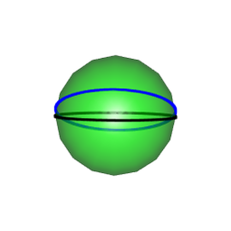
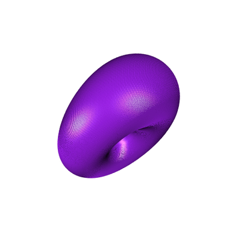
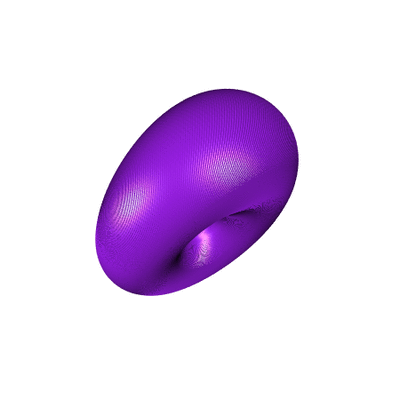

Hopf Torus (2/3): the bent equatorial case
Posted on May 1, 2018
by Stéphane Laurent
In this second part, we will see what happens when we map the points lying on a bent equator.
hopfinverse <- function(q, t){
1/sqrt(2*(1+q[3])) * c(q[1]*cos(t)+q[2]*sin(t),
sin(t)*(1+q[3]),
cos(t)*(1+q[3]),
q[1]*sin(t)-q[2]*cos(t))
}
stereog <- function(x){
c(x[1], x[2], x[3])/(1-x[4])
}The sphere with the bent equator will be plotted thanks to the following functions.

To rotate the equator to the bent equator, we used the rotation matrix \[ R_x = \begin{pmatrix} 1 & 0 & 0 \\ 0 & \cos \alpha & -\sin \alpha \\ 0 & \sin \alpha & \cos \alpha \end{pmatrix} \]
Rx <- function(alpha) {
rbind(c(1, 0, 0),
c(0, cos(alpha), -sin(alpha)),
c(0, sin(alpha), cos(alpha)))
}Now, let’s see the Hopf torus.
open3d(windowRect=c(50,50,500,500))
view3d(45,45)
t_ <- seq(0, 2*pi, len=200)
theta_ <- seq(0, 2*pi, len=300)
phi <- 0
for(i in seq_along(theta_)){
theta <- theta_[i]
rotated <- c(Rx(-pi/8) %*% c(cos(theta)*cos(phi), sin(theta)*cos(phi), sin(phi)))
circle4d <- sapply(t_, function(t){
hopfinverse(rotated, t)
})
circle3d <- t(apply(circle4d, 2, stereog))
shade3d(cylinder3d(circle3d, radius=0.1), color="purple")
}We get a deformed torus, still made of circles:
 
